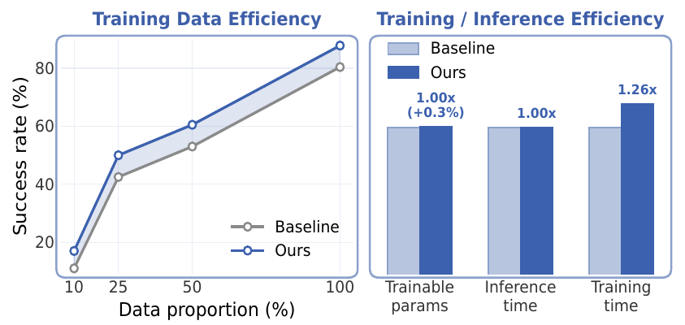
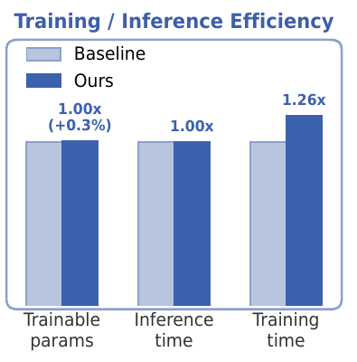

CoRL 2026 · Accepted
FlowVLA
Enabling World Dynamics Understanding
through Pluggable 3D Flow Learning
MMAI Lab · Ajou University
Learning 3D scene dynamics during training.
Deploying the original VLA with no additional inference cost.
Overview
Abstract
A vision-language-action (VLA) policy takes camera images, a language instruction, and the robot’s current state, then predicts action commands. For a task such as hanging a mug, recognizing the mug and rack is only part of the problem: the robot must move the handle into alignment with the rack as the scene changes.
Most VLA backbones inherit representations from 2D image-text pretraining, which does not directly teach them how objects and the end-effector move in 3D. FlowVLA uses motion reconstructed from demonstration videos as an additional training signal. It links the movement of scene points to the robot’s own movement, then removes the additional training modules for deployment.
Experiments with Seer and π₀.₅ on LIBERO, LIBERO-Plus, and a UR5e robot show improved manipulation success, robustness, and data efficiency, with no additional inference computation.
Method
A demonstration records what the cameras saw and how the robot moved. FlowVLA turns these two sources into matched training targets: 3D motion of scene points from video reconstruction, and movement of the robot’s Tool-Center-Point (TCP), the reference point on the end-effector used to describe its motion. Two small prediction heads connect these targets to the VLA’s internal action representation.

1. Recover 3D motion from demonstrations
3D flow is the displacement of a scene point between consecutive frames: it describes how far that point moves along each of the three spatial axes. FlowVLA constructs these targets offline using VDPM, a video reconstruction model that estimates 3D point trajectories from RGB frames. The trajectories are anchored to the first frame, so the same point can be followed across time.
The reconstructed points initially use the reference camera’s coordinate system. We transform them into the robot-base coordinate system before computing displacement, so scene motion and robot motion use the same spatial axes. We then select the points with the largest average motion over the training window. This magnitude-based Top-K selection keeps 2,048 points in the reported Seer setting and concentrates supervision on moving regions.
The RGB view shows the demonstration; the adjacent point view shows the motion-salient 3D points used for supervision. Selection uses motion magnitude, without semantic masks or contact labels.
2. Connect scene motion to the robot’s motion
The two training objectives answer complementary questions: how do the selected scene points move, and which combination of their motions matches the end-effector’s movement?
Point-Level Flow: predict scene-point displacement
During training, a small prediction head combines the action latent with the selected points’ reconstructed 3D coordinates. For each future step, it predicts the 3D displacement of every selected point. These predictions are compared with the reconstruction-derived targets using Smooth L1, a prediction-error loss that is less sensitive to large errors than squared error. This gives the policy’s action representation an explicit signal about future scene motion.
TCP-Level Flow: recover end-effector displacement
The TCP-level head learns a weight for each selected point and combines the predicted point displacements into one 3D vector. The target for this vector is the robot’s TCP displacement recorded in the demonstration. Training this weighted aggregation connects scene motion to robot control and encourages the model to emphasize motions around the end-effector and its interactions with objects.
A weighted sum connects point motion to TCP motion
For one prediction step, multiply each point’s predicted 3D displacement by its learned weight, then add the weighted displacements. The result is the predicted movement of the robot’s TCP. Training compares this vector with the TCP movement recorded in the demonstration.
Δ denotes displacement; a hat marks a prediction. The sum runs over the selected points for the same time step.
- Predicted 3D displacement of the TCP over one time step.
- Predicted 3D displacement of scene point u over the same time step.
- Learned importance weight for point u. Softmax makes the weights nonnegative and their sum equal to one.
- u identifies a point in U, the selected set of motion-salient scene points.
TCP-Level Aggregation
Stack Cups · Four views of the same demonstration
Read the Stack Cups views in order: the RGB demonstration; the points selected by motion magnitude; the points receiving the highest TCP aggregation weights; and the predicted TCP trajectory against the recorded trajectory. The weighted-point view displays the 512 highest-weight points for clarity. The underlying training selection still contains 2,048 points.
TCP Trajectory Visualization
These trajectories come from the auxiliary TCP head. Black shows the recorded TCP path and red shows the prediction from aggregated point flows. They visualize the training objective; the deployed policy produces its actions through the original action decoder.
3. Train with 3D flow, deploy the original policy
The flow objectives supplement the policy’s original action loss. They teach its internal representation to predict both scene-point motion and robot TCP motion while it learns the demonstration actions.
The training objective
The policy learns to reproduce demonstration actions while also predicting scene motion and end-effector motion. The two flow losses teach its internal action representation about 3D dynamics; the λ coefficients control their contribution to the total training objective.
- The combined objective used to train the policy.
- The original policy’s action-prediction loss against demonstration actions.
- Smooth L1 error between predicted point displacements and reconstructed 3D-flow targets.
- Smooth L1 error between the aggregated prediction and the robot’s recorded TCP displacement.
- Coefficients that set how much each flow-supervision loss contributes to training.
- During training
- Use the usual observations and demonstration actions, plus reconstructed 3D point coordinates and point-flow targets. Recorded robot motion supplies the TCP-flow target.
- At deployment
- Use the original VLA inputs and action decoder. No depth input, reconstruction model, or auxiliary flow heads are required.
VDPM runs once during offline preparation. Its reconstructed targets can be reused for training; the deployed policy performs no reconstruction or auxiliary flow prediction.
Real-World Experiments
We evaluate Seer with and without FlowVLA on a UR5e using third-person and wrist-view observations. Each task uses 40 demonstrations for training and 15 evaluation trials. Four long-horizon base tasks test multi-step manipulation; three 3D-aware tasks require precise alignment between objects and the end-effector.
Basketball
Pick up the red ball and place it in the basketball hoop
Hang Cup
Pick up the white mug and hang it on the wooden mug rack
Ring Insertion
Put the blue ring on the wooden stand, then put the pink ring on the wooden stand
These two source recordings use different playback speeds, as labeled.
Cup & Plush
Pick up the white cup and place it on top of the upside-down pink cup, then pick up the blue penguin plush toy and put it in the white cup
Cabinet
Open the drawer, take the orange cup out and put it on the table, then put the blue cup in the drawer and close the drawer
Seer and Seer + FlowVLA on the same task. These examples illustrate behavior; success rates below summarize all 15 evaluation trials.
Success across seven tasks
| Task / condition | Seer | Seer + FlowVLA | Gain |
|---|---|---|---|
| Cup & Plush | 9/15 · 60.0% | 11/15 · 73.3% | +13.3 pp |
| Fruit | 10/15 · 66.7% | 11/15 · 73.3% | +6.7 pp |
| Stack Cups | 11/15 · 73.3% | 14/15 · 93.3% | +20.0 pp |
| Cabinet | 9/15 · 60.0% | 11/15 · 73.3% | +13.3 pp |
| Basketball | 9/15 · 60.0% | 12/15 · 80.0% | +20.0 pp |
| Hang Cup | 7/15 · 46.7% | 13/15 · 86.7% | +40.0 pp |
| Ring Insertion | 10/15 · 66.7% | 11/15 · 73.3% | +6.7 pp |
40 demonstrations per task; 15 evaluation trials per policy. pp denotes percentage points. Video examples above cover the five tasks included in the presentation.
Zero-shot test-time variations
For zero-shot spatial variation, Basketball uses a different third-person camera angle and height; Ring Insertion removes a 20 mm ring support. No additional fine-tuning is performed for these variations.
Basketball · Viewpoint Variation
Third-person camera moved +10 cm in height, with a 30° angle shift.
Ring Insertion · Height Variation
The 20 mm ring support is removed.
Seer: 4×. Seer + FlowVLA: 6×. Original playback speeds are preserved.
Basketball · Height Variation
The initial ball position is raised by 10 cm. Additional qualitative example from the presentation.
Basketball · Layout Variation
Additional qualitative example from the presentation.
| Task / condition | Seer | Seer + FlowVLA | Gain |
|---|---|---|---|
| Viewpoint (Basketball) | 0/15 · 0.0% | 7/15 · 46.7% | +46.7 pp |
| Height (Ring Insertion) | 7/15 · 46.7% | 11/15 · 73.3% | +26.7 pp |
The table reports the viewpoint and ring-height evaluations in the paper. Ball-height and layout clips are additional qualitative examples from the presentation.
Simulation Results
We evaluate two different policy architectures: Seer, which uses an MLP action policy, and π₀.₅, which uses a flow-matching action policy. FlowVLA is attached only during training. LIBERO measures manipulation performance; LIBERO-Plus tests the same trained policies under unseen camera, robot, language, lighting, background, noise, and layout perturbations.
LIBERO
On LIBERO-Long, FlowVLA improves Seer from 80.4% to 87.8% and π₀.₅ from 92.4% to 94.8%. The auxiliary supervision is compatible with both MLP and flow-matching action policies.
| Method | Spatial (%) | Object (%) | Goal (%) | Long (%) | Average (%) |
|---|---|---|---|---|---|
| Diffusion Policy | 78.3 | 92.5 | 68.3 | 50.5 | 72.4 |
| OpenVLA | 84.7 | 88.4 | 79.2 | 53.7 | 76.5 |
| π₀ | 96.8 | 98.8 | 95.8 | 85.2 | 94.2 |
| CoT-VLA | 87.5 | 91.6 | 87.6 | 69.0 | 83.9 |
| π₀-FAST | 96.4 | 96.8 | 88.6 | 60.2 | 85.5 |
| SpatialVLA | 88.2 | 89.9 | 78.6 | 55.5 | 78.1 |
| Octo | 78.9 | 85.7 | 84.6 | 51.1 | 75.1 |
| UniVLA | 96.5 | 96.8 | 95.6 | 92.0 | 95.2 |
| Seer | — | — | — | 80.4 | 80.4† |
| Seer + FlowVLA | — | — | — | 87.8 | 87.8† |
| π₀.₅ | 98.8 | 98.2 | 98.0 | 92.4 | 96.8 |
| π₀.₅ + FlowVLA | 99.0 | 98.8 | 97.4 | 94.8 | 97.5 |
Seer follows the original protocol: the average of the top three checkpoints, with 20 rollouts per task. † The submitted table reports Seer on LIBERO-Long only; its average is therefore the Long score, not a four-suite average. — indicates an unreported suite.
LIBERO-Plus
Policies trained on LIBERO are evaluated under unseen perturbations without additional fine-tuning. Average success increases from 36.1% to 41.1% for Seer and from 57.5% to 59.2% for π₀.₅.
| Method | Camera | Robot | Language | Light | Background | Noise | Layout | Average (%) |
|---|---|---|---|---|---|---|---|---|
| OpenVLA | 0.8 | 3.5 | 23.0 | 8.1 | 34.8 | 15.2 | 28.5 | 15.6 |
| WorldVLA | 0.1 | 27.9 | 41.6 | 43.7 | 17.1 | 10.9 | 38.0 | 25.0 |
| UniVLA | 1.8 | 46.2 | 69.6 | 69.0 | 81.0 | 21.2 | 31.9 | 42.9 |
| Seer | 22.1 | 47.7 | 86.3 | 12.3 | 2.0 | 22.9 | 50.0 | 36.1 |
| Seer + FlowVLA | 24.6 | 54.6 | 87.0 | 25.1 | 8.1 | 25.5 | 57.2 | 41.1 |
| π₀.₅ | 21.4 | 39.1 | 68.4 | 86.7 | 83.3 | 36.1 | 84.6 | 57.5 |
| π₀.₅ + FlowVLA | 24.1 | 39.9 | 68.8 | 90.4 | 87.1 | 37.7 | 84.7 | 59.2 |
Analysis
Ablation studies remove individual components to test their contribution. Here, both supervision levels help: removing either the point-level or TCP-level loss reduces success. The tables also test coordinate alignment, temporal correspondence, point selection, and alternative supervision signals.
Ablations on LIBERO-Long
All ablations use Seer on LIBERO-Long.
| Configuration | Success (%) |
|---|---|
| FlowVLA | 87.8 |
| Without coordinate alignment | 86.3 |
| Without reference-frame alignment | 85.2 |
| Without magnitude-based selection | 84.0 |
| Without TCP-level loss | 83.8 |
| Without point-level loss | 84.8 |
| Baseline | 80.4 |
Without magnitude-based selection: sample the same number of points at random.
| Supervision signal | Success (%) |
|---|---|
| None (Baseline) | 80.4 |
| 2D optical flow (CoTracker) | 84.5 |
| Static 3D point cloud | 85.0 |
| Dynamic 3D flow (FlowVLA) | 87.8 |
The supervision baselines use the same auxiliary-head capacity and training protocol.
Removing either supervision level reduces success. Dynamic 3D flow reaches 87.8%, compared with 84.5% for 2D optical flow and 85.0% for static 3D points.
Data Efficiency and Computational Cost
FlowVLA improves success across the evaluated training-data fractions. In the reported Seer analysis, the auxiliary heads add 0.34% parameters and policy training takes approximately 1.26× as long, while inference computation is unchanged. The offline reconstruction step is performed once and its targets can be cached for subsequent experiments.



+0.34%Training parameters
1.26×Policy training time
1.00×Inference time
Offline reconstruction is a separate preprocessing cost: approximately 4 hours for LIBERO-Long in the reported setup. The reconstructed targets can be cached.
Limitations
FlowVLA needs offline 3D reconstruction, and supervision quality depends on the reconstructed trajectories. Motion magnitude provides a simple way to select active regions, but it does not guarantee that every selected point is relevant to the task. Here, world dynamics refers to manipulation-relevant 3D scene motion; the experiments do not establish general understanding of forces or contact mechanics.
Citation
@inproceedings{go2026flowvla,
title = {FlowVLA: Enabling World Dynamics Understanding
through Pluggable 3D Flow Learning},
author = {Junhyeong Go and Mingyu Jung and Woobin Im and Jongbin Ryu},
booktitle = {Conference on Robot Learning},
year = {2026},
url = {https://gnaroshi.dev/mmai-lab/flowvla/}
}